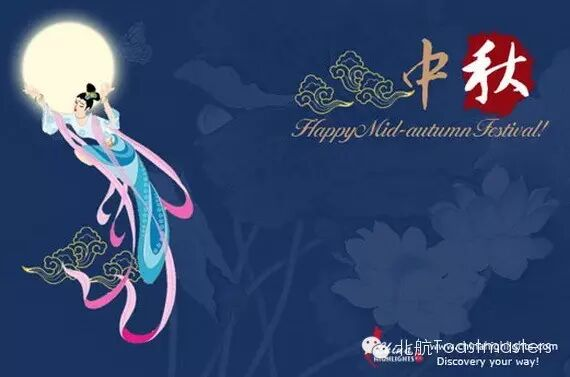
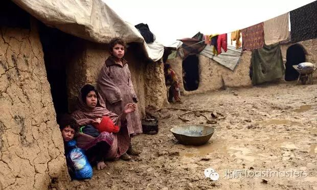
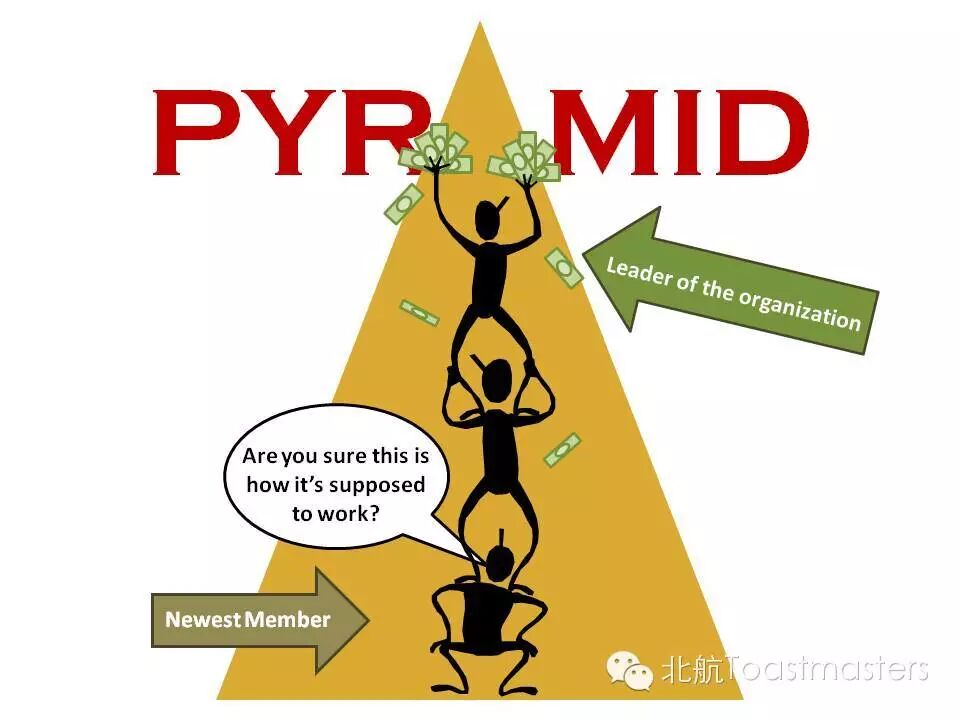

Beihang TMC 112th Meeting
Time: 19:30-21:30, Friday, September 25
Venue: Room F222, New Main Building, BeihangUniversity

This Sunday is the Mid-autumn Festival. The Mid-Autumn Festival, also called the Chinese Moon Festival, is one of the most important annual festivals for the Chinese and is an official holiday. This lively festival takes place on the15th day of the 8th Chinese lunar month every year. Full of joy and happiness,friends and loved ones gather to celebrate a time when the moon is at its fullest and brightest of the whole year, and everyone gathers together to delight in eating moon cakes and appreciating the spectacular beauty of thefull moon. In this Friday, what Interesting questions will be brought by our meeting’s Table Topic Master? Welcome to Our meeting to enjoy the happy time.
Workshop
Keven
How to Prepare a Speech
Kevenis a humorous and diligent speaker who has achieved the CC and CL awards enacted by the Toastmasters International. He can always bring us new and suggestive ideas. This time he wants to tell us how to prepare a speech. Wow! It sounds so great and practical. Let’s expect Keven’s Workshop.
Poverty

Recently, in the moments of WeChat, there is a popular article whose title is that:” why do I decide not to buy iPhone6S this time?” The answer is “no money”. This article is just a joke, but we have to face the problem of poverty. AS Chinese official data, there are still 80 million population of poverty in China. Which kinds of difficulties will be faced by these people? Let’s Look forward Jill’s sharing.
2Pyramid Selling Imitation

Pyramid Selling, a horrible name for us, is defined as hoax by Chinese Officials. There are many kinds of forms and slogans in Pyramid Selling. Nearly all of us have heard the Pyramid Selling and the Pyramid Selling’s forms of teaching, full of inconceivable passion and so on. But do you have ever personally experienced a teaching of Pyramid selling? Our Clubmember Jack will make a Pyramid Selling imitation for us. Is it interesting? Let’s expect it. P.S. Just Imitation, Just Imitation, it’s not real. Haw-Haw.

https://mp.weixin.qq.com/s/kR5gADb6NZuqSxhrht8TqA
本页为抢救式本地归档，图文已永久保存。